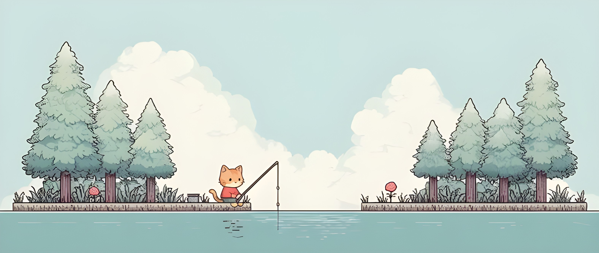

Hi, I’m Fiyah — a software engineer who likes quiet, thoughtful things. Cast a line, then follow it down to see what I’ve been developing.

Here are some of my projects.
A short line about what it is and what you did.
BrandingA short line about what it is and what you did.
Web AppA short line about what it is and what you did.
IllustrationA short line about what it is and what you did.
UI DesignA short line about what it is and what you did.
UI DesignA short line about what it is and what you did.
UI DesignA little about me.
I’m a software engineering student and developer who is interested about building softwares that feels both structurally solid under the hood and thoughtfully crafted on the surface. Whether I’m designing relational databases, implementing core algorithms, or turning an illustrated landscape into interactive web code, I want to make more projects that blend clean engineering with expressive user interfaces.
I’m based in Miri, Malaysia, and currently looking for software engineering internships and creative web development opportunities. My process starts with breaking complex problems down into predictable, modular logic before layering in the visual details—making sure everything works cleanly from the foundation up.